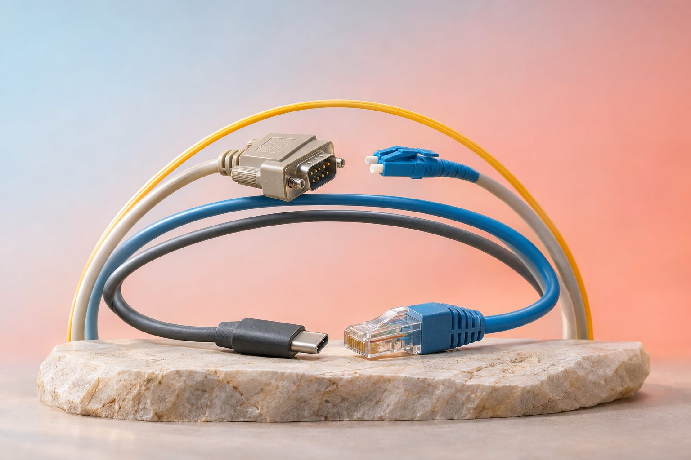
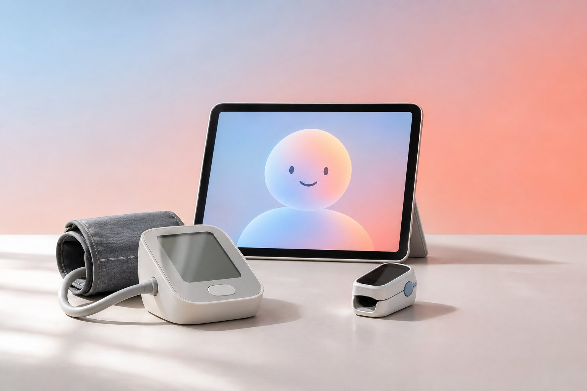

KI im Krankenhaus
Strategie, Einführung, Pflege, Praxissoftware und Regulierung aus Sicht eines großen Klinikverbunds.
Bei AGAPLESION leite ich den Zentralen Dienst KI & Daten, der KI in die Abläufe eines großen Klinikverbunds bringt: von der Strategie über die Auswahl und Einführung von Lösungen bis zur Bewertung im Alltag. Dazu gehören Pflegedokumentation, Praxissoftware, Datenplattformen und die Umsetzung der KI-Verordnung.
Vorträge
Eine Auswahl. Fortbildungen auf Wunsch CME-zertifiziert.
2026
- Nov.DDG Herbsttagung, Dresden

- Okt.DGKIMED Summit, Berlin, Charité

- Mai
2025
- MärzDRG-Forum, Berlin

2024
- Aug.Künstliche Intelligenz – Gibt es bald keine Rheumatologen mehr?Rheumasymposium, Herne
- MaiKongress der Gesundheitsnetzwerker, Berlin

2023
- Okt.22. Europäischer Gesundheitskongress, München

Beiträge

KI, die im Pflegealltag ankommt
Beim Deutschen Pflegetag in Berlin haben wir gezeigt, wie Sprach-KI in der Pflegedokumentation entlastet: voize, integriert in ORBIS von Dedalus.

Raus aus der Universität, rein in die Praxis
Vor einem Jahr stand ich zum ersten Mal beim DRG-Forum auf der Bühne. Auf der Rückfahrt im Zug fiel eine Entscheidung. Jetzt gab es dafür den Vordenker Award.

Das größte Hindernis ist nicht mehr die Technik
Eine Woche DMEA und der Recare AI Summit in Berlin: Viele Technologien schaffen den Weg in die Klinik. Was fehlt, sind Schnittstellen.

KI ohne Daten ist sinnfrei
Alle reden über KI-Agenten. Nutzen entsteht aber erst, wenn KI-Strategie und Datenstrategie zusammen gedacht werden.

Röntgenbilder in der Notaufnahme schneller auswerten
Im hr-Magazin maintower haben Oberärztin Sabine Geck und ich das Projekt AZmed am Klinikum Elisabethenstift Darmstadt vorgestellt.

Elf Start-ups beim AGAthon AI-Pitch in Darmstadt
Drei Minuten pro Pitch, Themen von Pflege bis OP-Dokumentation: Eindrücke vom zweiten AI-Pitch der AGAPLESION am Klinikum Darmstadt.

DokPro: Eine KI-Kabine für die Notaufnahme
Wartezeit sinnvoll nutzen: Wie ein Avatar Patientinnen und Patienten durch die Anamnese führt und dem Behandlungsteam einen strukturierten Bericht übergibt.

Drei Jahre Sprachmodelle in der Klinik
Vom Feintuning früher GPT-Modelle über Retrieval Augmented Generation bis auf die Station. Eine Zwischenbilanz aus Forschung und Krankenhausalltag.


Publikationen
- 2025Russ P, Mross PM, Kräling G, Lechner F, et al. Frontiers in Digital Health, 2025
- 2024Cirkel L, Lechner F, Schlicker N, et al. BMC Health Services Research, 2024
In den Medien
2026
- Nov.Interview
- Feb.PresseHessisches Ärzteblatt 2/2026
2025
- Dez.PresseE-HEALTH-COM 6/2025, Bericht vom Kongress Meeting am Meer in Heiligendamm
- Nov.Pressekma online, AGAthon 2025, mit Fabian Lechner in der Jury
- Nov.WeitereGesundheitswirtschaft Rhein-Main, Frankfurt
- Sept.PodcastDiagnose: Zukunft (Recare), Folge 7, mit Sebastian Polag
- JuniVideoAGAPLESION gAG, YouTube
- JuniPresse
- JuniPresse